In today’s discussion, we will delve into the fundamentals of feedback control systems. Let’s start with some simple real-world examples to illustrate the underlying feedback structure.
Bathroom Toilet Tank Control System
Consider a common household item - a bathroom toilet tank. The main purpose of this system is to maintain the water level inside the tank.
Objective: Control the water level in the tank to a preset level.
Controlled Variable: Water level in the tank.
Command Signal: Preset height, \(\bar{H}\)
Disturbance: Outflow from the tank.
Manipulated Variable: Inflow to the tank.
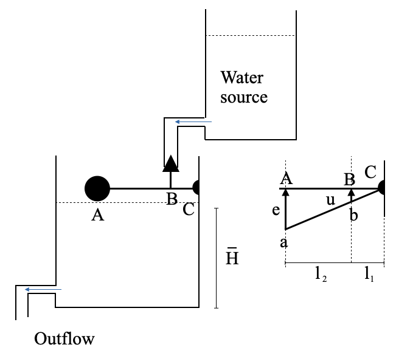
If there’s any deviation from the desired water level, the difference (error, \(e\)) will activate the controller - the float and lever mechanism. This controller adjusts the valve position, \(u\), proportional to the error signal.
\[
\text{Control variable}\;\;\;\;u = \frac{l_1}{l_1+l_2}e = Ke
\]
As water flows in, the error decreases, eventually reaching zero, causing the valve to close. Note that we can change \(K\) changing the position of the point \(B\).
Block Diagram
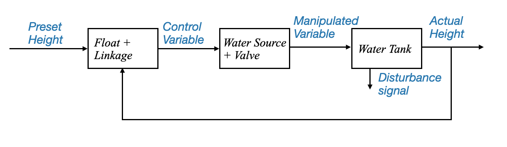
or in a more general form:
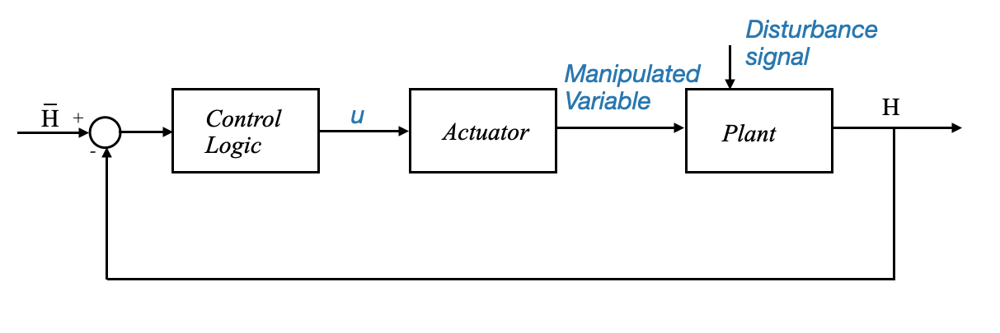
From Raymond T. Stefani, Bahram Shahian and Clement J. Savant, “Design of feedback control systems”, 4th edition, Oxford University press, 2001.
Note that the disturbance is the water outflowing the water tank.
Terminology: - Set-point: constant command signal - Regulator: control system that aims at keeping the controlled variable at the set-point.
Automobile Driving Control System
Another familiar example is an automobile driving system, which can control both its direction (heading) and speed.
Objective: Control the vehicle’s heading and speed.
Controlled Variables: Heading and Speed.
Command Signals: Direction of the highway and speed limits.
Disturbances: Wind force, road, and traffic conditions.
Manipulated Variables: Steering and accelerator/brake position.
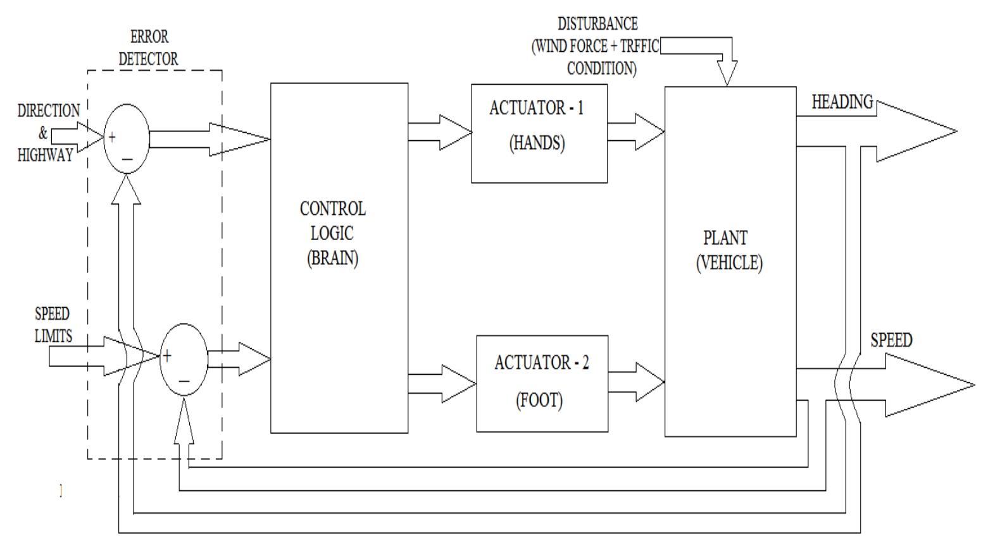
From M. Gopal, “Control System Principles and Design”, McGraw-Hill, 3rd Edition.
This system presents an interesting aspect: it has multiple input and output variables. Such systems are commonly referred to as MIMO (Multi-Input Multi-Output) or multivariable systems. This is in contrast to the bathroom toilet tank example, which was a SISO (Single Input Single Output) or scalar system.
The complexity in designing MIMO systems often arises from the interactions (or couplings) between inputs and outputs. For instance, while steering primarily affects the vehicle’s direction, applying brakes, which might lock up the wheel, could impact both speed and direction.
In many cases, however, these interactions may be negligibly small. When that happens, the system can be treated as two separate single input single output (SISO) systems. For example:
System 1: Where the input is a steering command and the output is the heading of the vehicle.
System 2: Where the input is acceleration or brake position and the output is the speed of the vehicle.
Breaking down a multivariable system into SISO systems can greatly simplify the design process. This is why, despite the prevalence of multivariable systems in the industrial sector, many designs focus on SISO systems. They are foundational and crucial.
We primarily focus on the design of single input single output systems. This approach does not imply that industries only deal with SISO systems. Instead, it highlights the frequent instances where interactions in a multivariable system can be neglected, allowing it to be treated as multiple SISO systems.
Let’s go back to the Automobile Control System and deep dive into the variuos components:
Actuator: This transforms an electrical signal into mechanical action. In our vehicle system, we can think of the accelerator pedal as an actuator. Similarly, for braking, our foot acts as an actuator.
Error Detector: Essential for feedback systems, this block detects the difference between the desired and actual state. In the context of driving, our eyes serve as the error detector.
Control Logic: Located in the brain of the driver, it processes information to make decisions.
Commands: These are dynamic and change based on external factors such as traffic signals and road directions.
Terminology - When the system’s purpose is to make the controlled variable (like speed or direction) follow time-varying commands, it’s referred to as a tracking system or command following system. - We refer to regulators when their purpose is to follow a non-time varying signal.
Hydraulic Power Steering Mechanism
Hydraulic power steering offers an intuitive example of a feedback system.
The hydraulic power steering mechanism is a vital component in many vehicles, allowing the driver to steer the car with ease. It leverages hydraulic pressure to assist the steering action, thus ensuring smoother control, especially when parking or navigating tight spaces.
How it Works
Steering Wheel Movement: When the driver turns the steering wheel, it rotates the steering gear.
Hydraulic Fluid Flow: This rotation acts on the control valve, which directs the hydraulic fluid either to the left or right of the piston.
Piston Movement: The hydraulic fluid pressure acts on the piston inside the cylinder, making it move to one side. This movement assists in turning the wheels of the car.
Feedback: The movement of the wheels generates feedback, which adjusts the flow of hydraulic fluid, ensuring that the steering wheel and the actual wheels of the vehicle are in alignment.
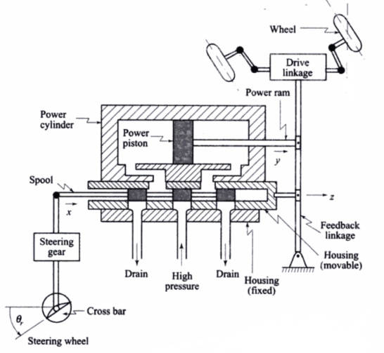
To properly analyze and design for such a system:
Model the System: Develop a mathematical representation. For instance, a physical model for this mechanical system might interconnect mass, spring, and friction elements.
Construct a Block Diagram: This would depict how different components like the command signal, error detector, plant (like piston and load), and others interact.
Consider Disturbances: Every feedback mechanism should account for external disturbances. In the context of driving, this could be wind or variations in load on the vehicle.
The previous system can be approximated with (we will see the details in a later notebook):
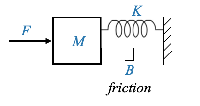
and represented via the following block-diagram:
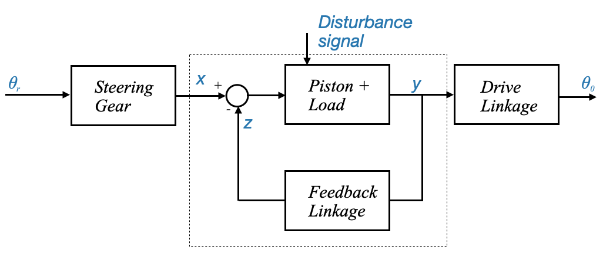
Note that: - The feedback part is highligthed within the dashed line - We will focus on this part during the rest of the course. - Additional blocks might be needed to convert signals as needed: - Set of reference input elements; Adjustment mechanisms (steering gear) - Indirectly controlled system elements
Terminology - The reference signal (or reference variable) \(x\) is proportional to the command signal \(\theta_r\), and the steering gear is in between. - The command signal and the reference variable in a particular system may be one and the same thing, but they might be different - The output signal \(\theta_0\) (position of the wheels) is dependent on the controlled variable \(y\). We talk about an indirectly controlled variable.
Residential Heating System
A feedback control system regulates the behavior of a system by comparing its output with a desired command (or reference) signal. The difference between these two signals forms an error signal, which the control system uses to adjust its output to minimize or eliminate the error. We’ll now delve into this concept using a residential heating system as an example.
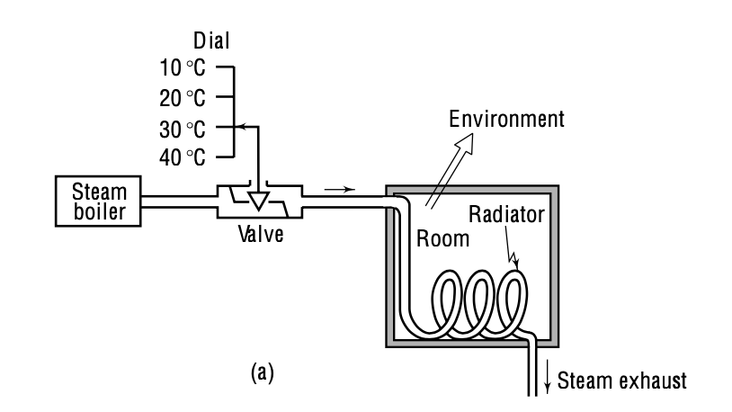
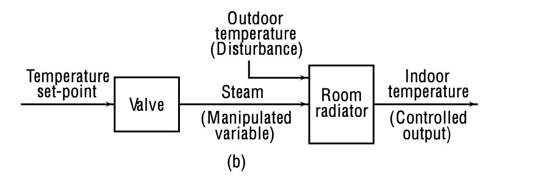
Figure: Open-loop temperature control (From Control systems principles and design)
In an open-loop system, there is no automatic adjustment of any errors in output temperature that may occur (or any other disturbances like radiator aging, etc).
If there is any error, it must be spotted by the heating-system operator and then the required alteration must be done manually.
In open-loop control, we must reset the controller input values or live with the consequences overheated rooms, excessive use of energy, etc. The way to rectify this is to inform the controller on-line about what is going wrong.
Making the residential heating system a feedback system
Components:
Command Signal: This is the desired system output. In our residential heating example, it’s the preset temperature the user desires for the room.
Reference Variable: This translates the command signal into a form the system can use. For the heating system, it’s the displacement of a set screw which adjusts the gap between the thermostat and a snap action switch (or the steam flow rate - however we can consider this also as an indirectly controlled variable).
Plant: room radiator
Controlled Variable: It’s the room temperature.
Indirectly Controlled Variable: This is a translation of the controlled variable to achieve the desired work. For the heating system, it might be the amount of steam flow or the valve opening.
We need a sensor. In this case, we use a the thermostat made of a bimetallic strip made of materials with very different thermal expansion characteristsis so that is curls due to temperature changes.
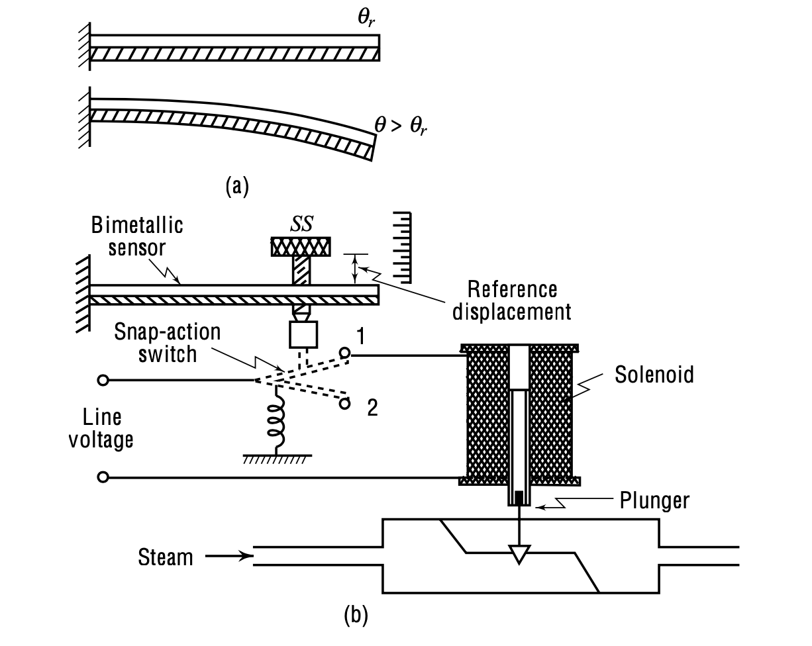
A dial sets the desired room temperature (Command Signal).
This desired temperature sets the distance between the thermostat and a snap action switch (Reference Variable).
The thermostat, made of a bimetallic strip, curls due to temperature changes. The strip’s curling controls the snap action switch, which in turn controls the solenoid and plunger, adjusting the valve opening and the steam flow.
The actual room temperature is affected by this steam flow (Controlled Variable).
If the room temperature goes above or below the set temperature, the bimetallic strip moves, causing a series of actions that adjust the steam flow to bring the temperature back to the desired level.
The described system works on an “on-off” control logic. The valve is either fully open (on) or fully closed (off). This approach can result in the room temperature oscillating between two setpoints around the desired temperature.
Such an oscillatory behavior is often acceptable for residential heating. The range of temperature fluctuation can be adjusted based on user preferences or system design.
The importance of Feedback
The system will work perfectly provided there is no disturbance on the system. A feedback system can adjust and adapt to disturbances or changes in the environment. For instance: - If environmental temperature changes, an open-loop heating system might not maintain the desired room temperature. But a feedback system would adjust its output (steam flow in our case) to counteract these disturbances. - The design and efficiency of the radiator can change over time due to wear, aging, and other factors. A feedback system can adapt to these changes and maintain consistent performance.
Disturbances: Two types of disturbances can affect a system:
Internal Disturbances: Changes within the system itself, like the aging of radiator tubes.
External Disturbances: External factors affecting the system, such as the external environmental temperature.
A feedback system is especially valuable in environments with frequent or significant disturbances. It continuously adjusts and adapts to maintain the desired output, ensuring consistent performance.
Let’s write a Python script to simulate and plot the temperature control of a room using an on-off controller
The room has a desired temperature (set_point).
The on-off controller will turn on the heater when the temperature drops below set_point - delta and will turn off when the temperature goes above set_point + delta (where delta is a small temperature difference to prevent frequent on-off switches).
The temperature will rise when the heater is on and drop due to environmental effects when the heater is off.
For the sake of simplicity, we will model the temperature change with linear equations.
import matplotlib.pyplot as pltimport numpy as np# Parametersset_point =20# Desired room temperature in degrees Celsiusdelta =1# Tolerance in degrees Celsius. This is simulating the time it takes for the thermostat to kick in.duration =300# Simulation time in minutesheating_rate =0.1# Temperature rise per minute when heater is oncooling_rate =0.05# Temperature drop per minute when heater is offinitial_temp =18# Initial room temperature# Initialize lists to store resultstimes = np.arange(0, duration, 1)temperatures = [initial_temp]heater_status = [0] # 0: off, 1: on# On-off controller simulationfor t in times[1:]: current_temp = temperatures[-1]if current_temp < set_point - delta: heater_status.append(1) temperatures.append(current_temp + heating_rate)elif current_temp > set_point + delta: heater_status.append(0) temperatures.append(current_temp - cooling_rate)else: heater_status.append(heater_status[-1])if heater_status[-1] ==1: temperatures.append(current_temp + heating_rate)else: temperatures.append(current_temp - cooling_rate)# Plottingfig, ax1 = plt.subplots()ax1.set_xlabel('Time (minutes)')ax1.set_ylabel('Temperature (°C)', color='tab:blue')ax1.plot(times, temperatures, label='Room Temperature', color='tab:blue', linewidth=3)ax1.axhline(y=set_point, color='r', linestyle='--', label='Set Point')ax1.tick_params(axis='y', labelcolor='tab:blue')ax1.legend(loc='upper left')ax2 = ax1.twinx()ax2.set_ylabel('Heater Status', color='tab:orange')ax2.step(times, heater_status, label='Heater Status', color='tab:orange')ax2.tick_params(axis='y', labelcolor='tab:orange')plt.title('On-Off Temperature Controller')plt.tight_layout()plt.show()
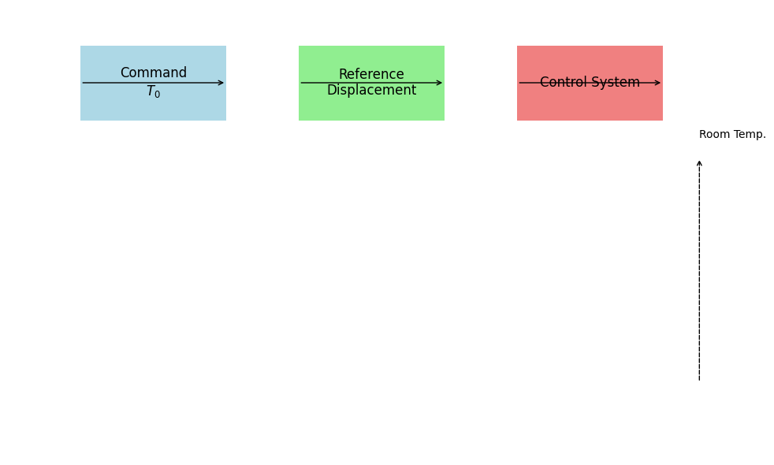
In a residential heating application the oscillation (e.g., 20 degree centigrade plus minus 1 degree) might be tolerated
This type of control logic is called on/off control (or bang/bang control)
We can place this within a more general block diagram:
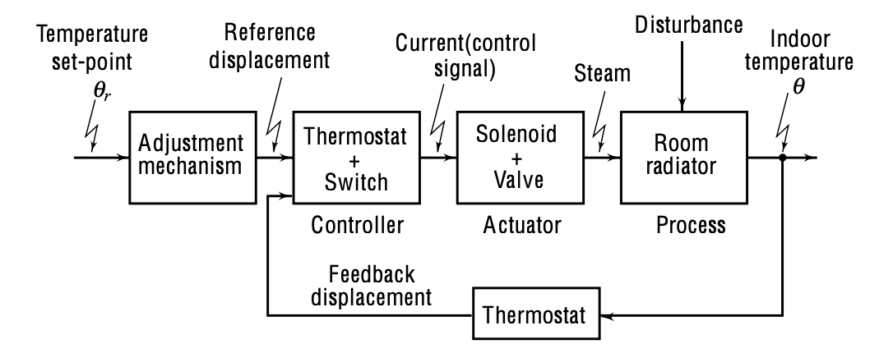
The temperature regulation loop can be broken down into several components:
Feedback Action (Sensor): Represented by the thermostat. The desired room temperature, θ, is continuously compared against the actual temperature by this thermostat.
Controller: The amalgamation of the thermostat and the switch functions as the controller. The role of the controller is to modulate the current based on feedback.
Actuator: This is a vital component that produces a suitable manipulated signal for the plant, often amplifying the input to a level suitable for driving the plant. In our heating system, the actuator is a combination of the solenoid and valve. Its output is the steam flow that heats the room.
Plant: This is the system we want to control—in this case, the room radiator.
Disturbance: External factors, such as environmental temperature, that might affect the plant.
Block Diagram of the Basic Feedback Structure
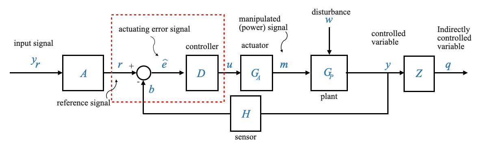
\(y_r\): The command signal. This could represent temperature, displacement, water level, etc.
\(A\): Block for reference input elements responsible for generating the reference signal, \(r\).
\(b\): Feedback signal compared against \(r\) to produce an actuating error signal, \(\hat{e}\)
\(D\): The controller or control logic block that generates a control signal\(u\) based on \(\hat{e}\). Sometime the definition of the controller includes the error detector.
\(G_A\): The actuator block, increasing the power level of the signal to drive the plant, producing a manipulated signal.
\(G_P\): The plant or process, which takes in the manipulated signal \(m\) and disturbances \(w\) to produce the output \(y\).
\(w\): disturbance acting on the plant
\(y\): manipulated variable (output)
\(H\): feedback system element (sensor), which produces the feedback signal \(b\).
\(Z\): indirectly controlled system (not part of the feedback)
\(q\): indirectly controlled output
Note: Not every system will include every block or variable listed, but this structure serves as a foundation for understanding the information flow in feedback control systems.